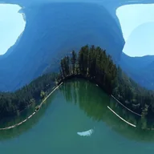

Reorientar esfera 360°

Gira una capa de panorama 360° dentro de su esfera para nivelar el horizonte o cambiar hacia dónde apunta el frente.
Ajustes
| Ajuste | Tipo | Rango | Predeterminado |
|---|---|---|---|
| Guiñada | Ángulo | -3600° a 3600° | 0° |
| Cabeceo | Ángulo | -3600° a 3600° | 0° |
| Alabeo | Ángulo | -3600° a 3600° | 0° |